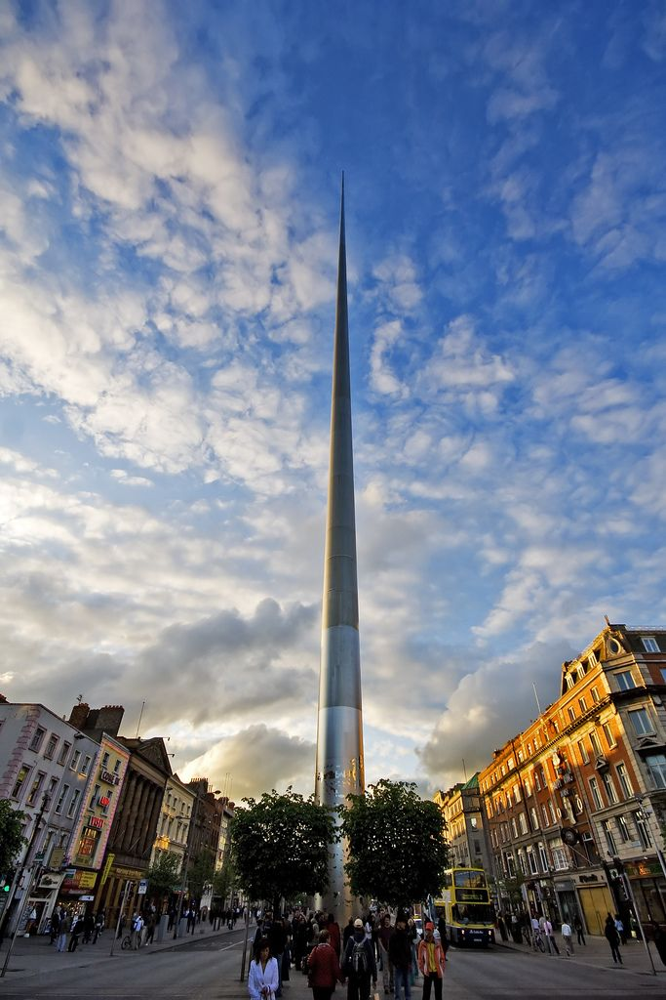

Some Landmarks
-
Dublin Castle

-
General Post Office (GPO)

-
Phoenix Park

-
Temple Bar

-
The Spire

Dublin is the capital and largest city in Ireland. It is located on the east coast and is known for its rich history, Georgian architecture, and vibrant culture.
Dublin was founded twice by the Vikings. The first settlement was a longphort used by Scandinavians from 841 AD to 902 AD. They returned in 917 AD and re-established Dublin, which developed into the city we know today.
In the 19th century, Ireland experienced revolutionary struggles. Movements for self-determination grew, leading to events like the 1916 Rising, the 1919 War of Independence, the 1922 Anglo-Irish Treaty, and the following Civil War. Despite damage, Dublin was rebuilt and remains the seat of the Irish government today.
After independence, Dublin became the capital of the new state. Schools, public buildings, and housing were built, and the city slowly expanded. During the Celtic Tiger (1995–2008), Dublin transformed into a major tech and finance hub, attracting companies like Google, Microsoft, Intel, Facebook, and Amazon. Today, Dublin has a population of 1.5 million and a high GDP per capita.